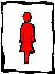
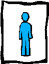
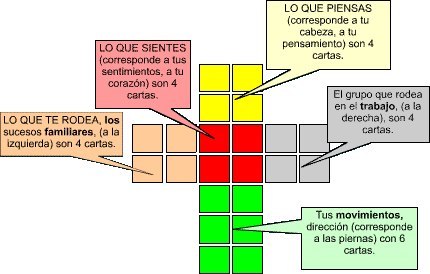

MICHEL DE NOSTRADAMUS Nació el 14 de Diciembre de 1.503 en Saint Rémy de Provence, muere en Salon en 1566.
Fué un médico eminente, atento y preocupado siempre por sus "pacientes". Su dedicación fué constante y gracias a su devoción salvó muchas vidas, además de ayudarles a superar sus angustias.
Medico de la corte, además de Astrólogo se preocupó por el bienestar y el futuro de la Humanidad. Su intuición la describió en sus profecías con cuartetos en las Centurias, con mensajes en clave de advertencias en sucesos futuros que se pueden evitar. Si el ser humano utiliza su libre albedrío con responsabilidad, porque decía que a nadie se le puede obligar.
Decía que cada ser humano es responsable de si mismo, que se debe elegir para acertar lo mejor posible, analizando y comparando para evitar errores.
Reflexionar es lo conveniente para no perjudicar a otros. Se Elige mal, por no observar los detalles que mejoran o empeoran las circunstancias.
Se es libre para corregir los errores que se cometen, sabiendo utilizar los dones que se reciben gratuitamente, observando aún los menores detalles, para poder mejorar el entorno. El éxito se logra con disciplina y atención.
Cada uno es el hacedor de su futuro, para corregir a tiempo las influencias del medio que lo rodea. Se nace para disfrutar y hay que reconocer la capacidad e inteligencia personal desarrollándola cuidadosamente, porque todo tiene solución, si se observan aún los menores detalles.
En múltiples ocasiones fue asesor de la corte en la toma de soluciones posibles, esperaba acertar para evitar dificultades, injusticias y errores.
1º Dios creó el Hombre y la Mujer, porque son el motivo de la Creación, para ellos destinó: animales, plantas, frutos, flores y todo lo que les rodea. Nombró el Hombre y la Mujer como administradores de la Naturaleza que tienen la Misión, de ordenar, aprovechar y manejar estos recursos con toda libertad.
2º Recordar que sin Dios nada puedes, hay que responder a Dios que tanto nos ama, Dios nos creó, luego le pertenecemos, alegrarse de Amar a nuestro Dueño. Sólo Dios conoce las debilidades y necesidades de cada uno. Confiar en el Creador que lo proporciona todo, no preocuparse, asombrarse de las maravillas que creó para todos y disfrutar de la bella Naturaleza que nos rodea.
3º Conócete a ti mismo, agradecer dones y facultades, aceptar cómo eres, examinar los deseos, eliminar debilidades, progresar cada día en mejorar las ideas, reflexionar antes de actuar y decidir. Pedir ayuda en las dudas al actuar.
4º Comprender las dificultades, no lo puedes todo, observar las limitaciones, corregir defectos y errores que encuentres, procurar ser responsable consigo, cuidar de si, es el mejor remedio, disculpar a los demás, pero aprender de los errores ajenos, solicitar opinión de quienes nos aman, elegir libremente, no culpar a otros por nuestras acciones, respetar a quienes amamos para ser feliz.
Este sencillo Naipe, lo utilizaba Nostradamus para orientar en consultas a las personas que se lo solicitaban, son 36 cartas que corresponden a mensajes en clave, facilita el Auto Análisis, es una ayuda para estudiarse y conocerse.
(Los nuevos dibujos se adaptaron a la época actual para facilitar su interpretación).
La distribución corresponde a la figura humana.
 
1º Lo que se piensa,
2º Los sentimientos,
3º El grupo familiar,
4º Grupo del trabajo,
5º Lugares a recorrer.
Y como si se barajaran todas las cartas para interpretar:
Nostradamus también utilizaba un Tarot, con los 22 arcanos mayores y 56 menores, costumbre para descifrar los acontecimientos de su época.
